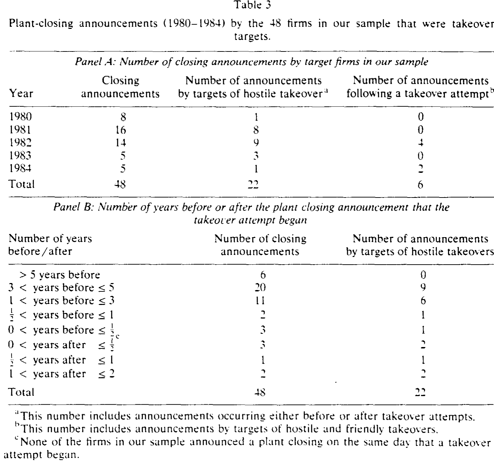
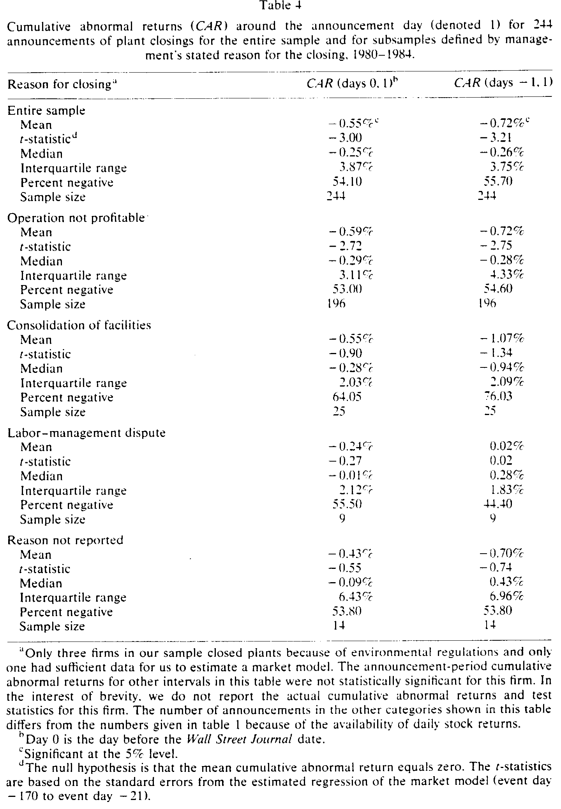
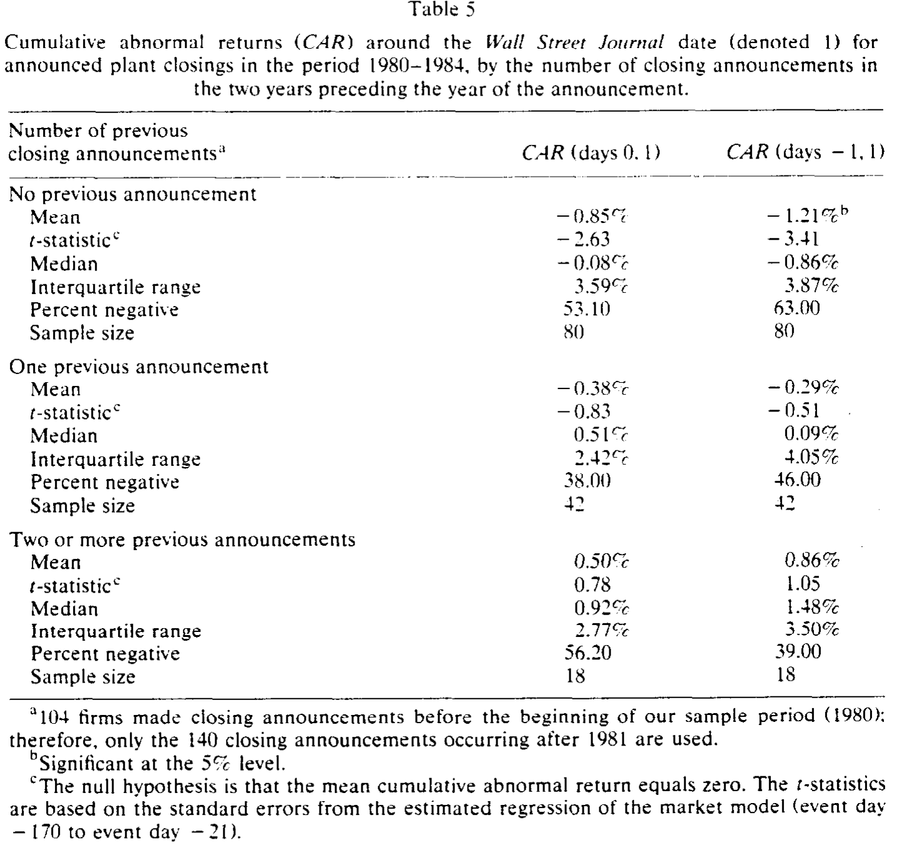
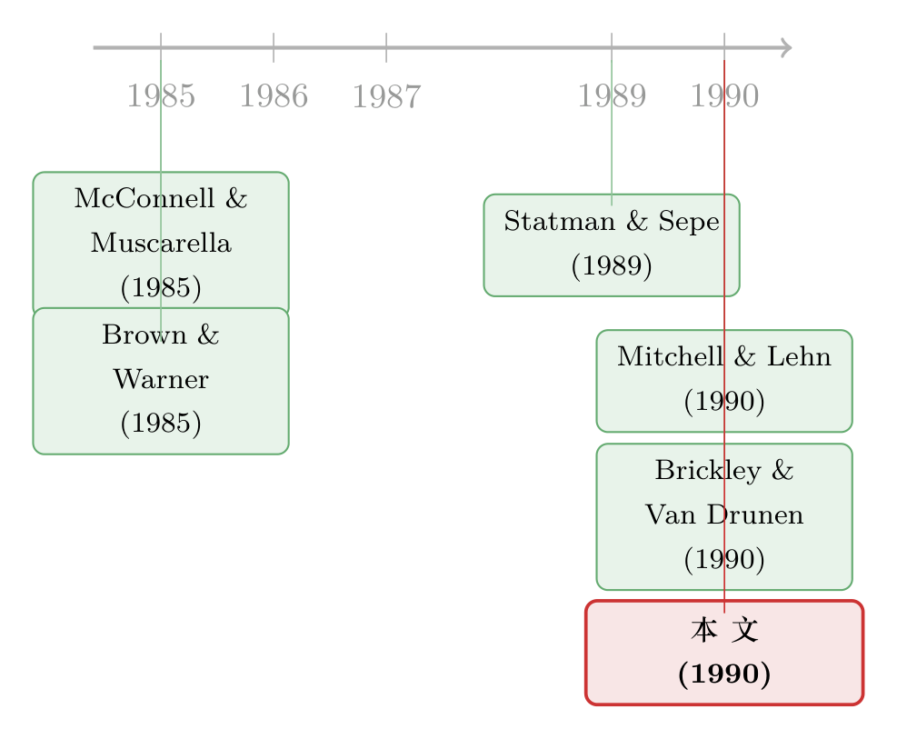

关掉一家亏损的工厂，本该是好消息——可股价为什么先跌了？
本文读的是 Blackwell, Marr & Spivey (1990, JFE)：他们收集了 1980–1984 年间 286 桩工厂关闭公告，发现这些关闭主要由「持续亏损」而非「收购威胁」驱动；公告期股价平均下跌 −0.55%（t = −3.00）。更关键的是，这种负反应几乎只出现在「两年内第一次关厂」的公司身上——这说明市场惩罚的不是「关厂」这个动作本身，而是公告里泄露出来的坏消息。
1 一个本该是「好消息」的决定
先来想一个看似简单的问题。
一家公司宣布关掉旗下一座工厂。如果这座工厂未来的现金流折现值，还不如把它关掉、变卖或腾挪资源所能省下的钱，那么关厂就是一个净现值为正的决策——它增加了公司的价值。按照这个逻辑，市场听到关厂的消息，应该鼓掌才对：管理层终于肯壮士断腕，把流血的伤口包扎上了。
这并不是凭空的猜想。Statman 和 Sepe (1989) 研究「项目终止 (project termination)」公告时，恰恰发现了正向的市场反应。他们的样本里，管理层往往为了收回沉没成本而把一个亏损项目硬拖了太久；当管理层终于止损时，市场反而松了一口气。他们还找到一个漂亮的佐证：项目终止前关于该项目的负面信息越多，终止时的异常收益越正——市场早就盼着这一刀了。
于是一个自然的张力浮现出来：既然终止亏损项目能换来掌声，那么关掉一座亏损工厂，市场为什么不该一样鼓掌？
这正是本文要回答的谜题。而它给出的答案，恰恰是反过来的——市场不但没鼓掌，反而扣了分。
2 先把动机查清楚：是「止损」，还是「被逼宫」？
要理解市场的反应，得先搞清楚公司为什么关厂。1980 年代正是美国「企业掠夺者 (corporate raider)」横行、敌意收购浪潮汹涌的年代。一个流行的叙事是：管理层关厂、卖资产、搞重组，往往是被收购威胁逼出来的——要么是收购真的发生了，要么是为了抬高股价、防患于未然。
如果关厂是被收购威胁「逼」出来的，那它的信息含义就完全不同了。所以作者做的第一件事，是把样本里的关厂公司，和美国证监会经济政策分析处 (DEPA) 编制的收购目标名单逐一比对。
结果相当干脆。样本里 48 家（占 16.8%）公司在关厂时曾是收购目标。作为参照，Mitchell 和 Lehn (1990) 考察了 1,158 家工业公司，发现其中 10.4% 在 1980–1988 年间卷入过控制权交易——16.8% 并不算特别高。更要命的是时间顺序：在这 48 桩里，只有 6 桩（12.5%）的关厂发生在收购企图之后；而 37 桩（77%）的关厂，公告时间比收购企图早了一年以上。

Table 3
如表 3 所示，绝大多数关厂公告都远远早于任何收购动作。换句话说，关厂不像是收购的「结果」或「应激反应」。那它到底因何而起？
作者翻遍了每一篇《华尔街日报》(Wall Street Journal, WSJ) 的关厂报道，把管理层自己给出的理由分成四类。结果是压倒性的：220 桩（77%）被归因于「经营不盈利 (operation not profitable)」，其余依次是设施整合、劳资纠纷、环保法规。再去翻 Compustat 上的财务数据，这些公司在关厂前两年的净资产收益率 (return on equity, ROE)，无论是减去全市场中位数还是减去同三位 SIC 行业中位数，都显著为负——以全样本为例，关厂当年（year 0）的市场调整 ROE 中位数是 −7.09%，行业调整后是 −3.99%，Wilcoxon 检验的 p 值几乎为 0。
到这一步，故事的第一层已经清楚了：关厂主要是被糟糕的盈利「拖」出来的，而不是被收购威胁「逼」出来的。这本身就是对「掠夺者叙事」的一次降温。
顺带一提，作者还发现关厂公告之后两年，行业调整后的盈利有轻微改善（year 0 到 year 2 的差异在 5% 水平显著）。这说明止损确实起了点作用——可即便如此，市场在公告当天给的还是负分。这正是下一节的悬念。
3 识别策略：把「决策」和「信息」拆开
接下来是这篇论文真正的方法核心。作者用的是再标准不过的事件研究 (event study)：用市场模型 (market model) 在事件窗之外（事件日 −170 到 −21）估计每只股票的正常收益，再算公告期的累计异常收益 (cumulative abnormal return, CAR)。检验的零假设是平均 CAR 等于零，标准误来自估计期回归。整套做法严格遵循 Brown 和 Warner (1985) 的事件研究范式（关于事件研究里那些容易被忽视的统计陷阱，可参见《纳斯达克的收益里藏着「假阳性」》）。
一个小细节值得留意：作者用的是两天窗口——WSJ 见报日（记为 day 1）以及它的前一天（day 0）。因为 WSJ 常常在消息公开后的第二天才登出，所以前一天往往才是信息真正进入市场的时刻。
结果在表 4 里。全样本在公告期（day 0 到 day 1）的 CAR 是 −0.55%（t = −3.00）；若把窗口放宽到 day −1 到 day 1，则是 −0.72%（t = −3.21）。分组来看，各个子样本的异常收益全部为负，但只有占大头的「经营不盈利」组在统计上显著：它的公告期 CAR 为 −0.59%（t = −2.72）。其余几组（设施整合、劳资纠纷、原因未报告）符号也都是负的，只是样本太小、估不显著。

Table 4
如表 4 所示，市场对关厂的整体回应是负的。可这就把我们带回了第 1 节的悖论：如果关厂是净现值为正的止损，市场为什么扣分？
作者在这里很诚实地承认，光凭这个负号，至少有两种解释无法区分：
- 其一，关厂公告泄露了新信息——它让投资者意识到，这家公司未来的现金流或投资机会，比原先想象的要差（关厂只是这个坏消息的载体）。
- 其二，市场认为管理层做了一个糟糕的投资决策，关掉了本不该关的、还能赚钱的产能。
单看表 4，这两种故事都说得通。要在它们之间做出判断，需要一个更巧的设计。
4 真正关键的一步：让「意外」自己说话
这就是全文最漂亮的转折。
作者的推理是这样的：如果市场的负反应来自新信息，而不是关厂这个动作本身，那么反应应该在「最意外」的时候最强烈。反过来，如果一家公司此前已经反复关厂、坏消息早已铺垫充分，那么再来一次关厂公告，就不该再激起多大波澜——因为市场早有预期。
于是作者对 1982 年及以后的 140 桩关厂，逐一去查《华尔街日报索引》，数出每家公司在该次公告前两年里宣布过几次关厂。数据本身就很说明问题：57% 的公司在前两年没有任何其他关厂记录，30% 有过一次，13% 有过不止一次。
然后把样本按「前两年关厂次数」重新分组，再跑一遍事件研究。结果堪称这篇论文的「定海神针」：
- 两年内第一次关厂（80 家）：公告期 CAR
−0.85%，在 5% 水平显著；day −1 到 1 更达到−1.21%，同样显著。 - 此前已关过一次（42 家）：CAR
−0.38%，不显著。 - 此前关过两次或以上（18 家）：CAR
+0.50%——符号竟然翻成了正的，且不显著。

Table 5
如表 5 所示，负反应几乎被「第一次关厂」这一类独吞了。一旦公司有了近期关厂的「前科」，市场就基本无动于衷，甚至略偏正面。
这一步之所以关键，是因为它把「信息含量」从「决策本身」里干净地剥了出来。关厂这个动作对三组公司是一样的；不一样的只是它携带的意外程度。既然反应随意外程度递减，那么市场惩罚的就不是「关厂」，而是关厂第一次捅破的那层窗户纸——这家公司的前景，没你想的那么好。
到这里，第 1 节的悖论也就解开了。关厂确实可能是净现值为正的止损（盈利在公告后还略有改善）；但对一个之前毫无征兆的市场而言，「我们要关一座厂」同时也是「我们的需求/利润正在下滑」的同义词。坏消息的信息效应，盖过了止损的价值效应。这也呼应了 Brickley 和 Van Drunen (1990) 在「单位清算 (unit liquidation)」里看到的负反应——市场response 的，是公告里关于投资机会的那则坏消息，而不是清算这件「本该受欢迎」的事。
5 文献脉络
把这篇论文放回它所处的脉络里，故事会更清楚。
早期对「公司投资决策」的市场反应研究，给出的结论是混合的。McConnell 和 Muscarella (1985) 发现，计划资本支出意外增加会抬升公司价值、意外减少会压低公司价值——按这个逻辑，关厂（产能收缩）该是坏消息。可 Statman 和 Sepe (1989) 偏偏发现项目终止带来正反应——按这个逻辑，止损又该是好消息。两条线索指向相反的方向，这正是本文要调和的张力。

与本文几乎同时，Brickley 和 Van Drunen (1990) 在内部重组的框架下考察了 30 桩「单位清算」，发现显著的负反应，并推断市场是在对公告里隐含的坏消息定价；Mitchell 和 Lehn (1990) 则提供了「收购目标基准率」这把尺子，让本文得以判断 16.8% 算不算高。方法上，整篇论文站在 Brown 和 Warner (1985) 的事件研究范式之上；而 Meulbroek 等 (1990) 用同一套 Wilcoxon 思路检验过「鲨鱼驱避剂」前后研发支出的变化，与本文衡量关厂前后盈利变化的手法一脉相承。
本文的位置，就在这两条相反线索的交汇处：它没有简单地选边站，而是用「第一次 vs. 重复关厂」的设计，把「决策的价值」和「信息的含量」拆开，从而解释了为什么收缩产能的关厂会得到负反应——答案不在动作里，而在意外里。这种「把负反应归因于信息泄露而非决策本身」的思路，与后来公司金融里关于自由现金流与增长机会的讨论一脉相承（关于市场如何从公司行为里读出「增长机会变少」的坏消息，可参见《现金多的公司去并购，市场为什么先扣分？》）；而把它放进「自愿重组」的大图景里看，则与《没有野蛮人敲门，一家公司也能自己拆掉自己》讲的是同一类问题的不同侧面。
6 评论与延伸（Q&A + 研究方向）
(a) 几个可能的疑问
Q：−0.55% 的反应，会不会太小了，根本不值一提？
量级确实不大，但这恰恰合理。一座工厂往往只占公司价值的一小部分，所以全公司层面的反应被「稀释」是意料之中的。真正有信息量的不是绝对值，而是它显著为负、且集中在第一次关厂——后者才是识别的关键。
Q：既然关厂是净现值为正的止损，为什么作者不直接证明「这是个好决策」？
因为公告期的 CAR 同时混合了「决策的 NPV 效应」和「信息泄露效应」，作者明说无法把两者分离。他们能做的是间接论证：盈利在公告后略有改善（支持止损有效），而负反应只来自意外关厂（支持信息效应主导）。这是一种「证据拼图」式的推断，而非一锤定音的因果识别。
Q：把关厂归因于「盈利下滑」而非「收购威胁」，这个对比可信吗？
比较可信。16.8% 对 Mitchell-Lehn 的 10.4% 基准率只是略高，而且 77% 的关厂发生在收购企图一年以上之前——时间顺序基本排除了「收购逼出关厂」的因果。当然，这里没法排除「潜在的、未被记录的收购威胁」，这是一个无法观测的反事实。
Q：用《华尔街日报》见报日做事件日，会不会有信息提前泄露的问题？
会有，这也是作者用 day 0–day 1 两天窗口、并额外报告 day −1 的原因。但盈利长期下滑本身就是慢慢被市场消化的，真正「干净」的事件日很难界定。这正是为什么「第一次关厂」的设计如此重要——它不依赖于精确的事件日，而依赖于横截面上的意外程度差异。
Q：「重复关厂组」CAR 翻正，是不是说明反复关厂反而是好事？
不能这么读。那一组只有 18 个观测，
+0.50%在统计上不显著，作者也明确把它解释为「样本太小」加「信息已被预期」。稳妥的结论只是：重复关厂不再引发显著的负反应，而非它带来正收益。
Q：这篇论文对今天的研究者还有什么用？
它的方法论范式——「用意外程度的横截面差异，把『决策效应』和『信息效应』分开」——至今仍是事件研究里最干净的识别思路之一。任何「本该是好消息却得到坏反应」的场景（裁员、减产、削减资本开支、撤资），都能套用这把钥匙。
(b) 几个可能的研究问题与提案
1. 关厂的「信用」镜像：债券市场怎么反应？
【经济故事】关厂对股东是「坏消息」（增长机会变差），但对债权人可能是「好消息」（止损、降低风险、保护现金流）。股、债反应的符号差异，能直接检验「信息效应 vs. 风险转移」。
【可行性】中。需要
TRACE公司债成交数据匹配关厂公告（可用现代版的关厂/裁员事件库，如 WARN Act 通知）。识别上仍受「事件日不干净」之累，但股债反差本身就是有力的横截面证据。
2. 把「意外程度」做成连续变量
【经济故事】本文用「前两年关厂次数」这个粗糙的离散代理来度量意外。今天完全可以用分析师预期修正、期权隐含波动率、或文本情绪，构造一个连续的「意外度」，看负反应是否随之单调变化。
【可行性】高。
I/B/E/S预期数据 +OptionMetrics+ 关厂事件即可。识别清晰，是对原文最自然的现代化复刻。
3. 外资持有人会不会把关厂读成「不同的故事」？
【经济故事】外资机构对本地工厂的需求/竞争前景信息更稀薄，可能对关厂公告反应更剧烈（信息冲击更大），也可能更迟钝（不关注）。把持有人结构拆开，能检验「信息效应」的异质性。
【可行性】中。需
FactSet/13F 拆分外资 vs. 本地持股，匹配关厂事件。样本量是约束，但方向新颖，契合外资持有人这条线。
4. 关厂与产业流动性：被关的产能流去了哪里？
【经济故事】一座厂关掉，资产要么被同行接手（产业内再配置），要么彻底退出。资产的可变现性应当影响关厂的市场反应——越好卖的资产，止损越干净，负反应越小。
【可行性】中。可借鉴资产流动性文献（见《想卖的不是它，能卖的才是它》）构造资产专用性指标，难点在于追踪关闭产能的去向。
7 我的判断
先说贡献。这篇论文最值得称道的，不是「关厂有负反应」这个结论本身（量级小、放今天算不上惊艳），而是它调和了两条相反的早期证据，并用一个极简的设计——「第一次 vs. 重复关厂」——把「决策的价值」与「信息的含量」干净地剥离开来。在一个只有事件研究工具的年代，这是一次相当聪明的识别。它同时顺手打掉了「关厂=收购逼宫」的流行叙事，把动机重新锚定在盈利上。
再说对识别的担忧。最大的软肋是「决策效应」和「信息效应」始终没能被真正量化分离——作者自己也承认这一点。「盈利略有改善」是一个弱证据，因为它可能只是均值回归。其次，事件日的界定依赖 WSJ 见报，而盈利下滑是缓慢被消化的，公告前的信息泄露几乎无法避免；好在「意外程度」的横截面设计部分绕开了这个问题。最后，几个关键子样本（重复关厂组只有 18 家）实在太小，那个「翻正」的符号读不出太多东西。
最后说后续想看到什么。我最想看到的是把这套思路搬到债券市场，看股债反应的符号差异——那会是对「信息效应主导」这个核心论断最直接的检验。其次，是用现代的连续「意外度」变量替换粗糙的离散计数，验证负反应是否真的随意外单调衰减。如果这两件事都成立，那么三十多年前这篇小而精的论文，就值得在今天被重新认真地引用一次。
参考文献
Brickley, James A. and Leonard D. Van Drunen (1990). Internal corporate restructuring: An empirical analysis. Journal of Accounting and Economics 12, 251–280.
Brown, Stephen J. and Jerold B. Warner (1985). Using daily stock returns: The case of event studies. Journal of Financial Economics 14, 3–31.
McConnell, John J. and Chris J. Muscarella (1985). Corporate capital expenditure decisions and the market value of the firm. Journal of Financial Economics 14, 399–422.
Meulbroek, Lisa, Mark Mitchell, J. Harold Mulherin, Jeffry Netter, and Annette Poulsen (1990). Shark repellents and managerial myopia: An empirical test. Journal of Political Economy, forthcoming.
Mitchell, Mark L. and Kenneth Lehn (1990). Do bad bidders become good targets? Journal of Political Economy 98, 372–398.
Statman, Meir and James F. Sepe (1989). Project termination announcements and the market value of the firm. Financial Management 18, 74–81.